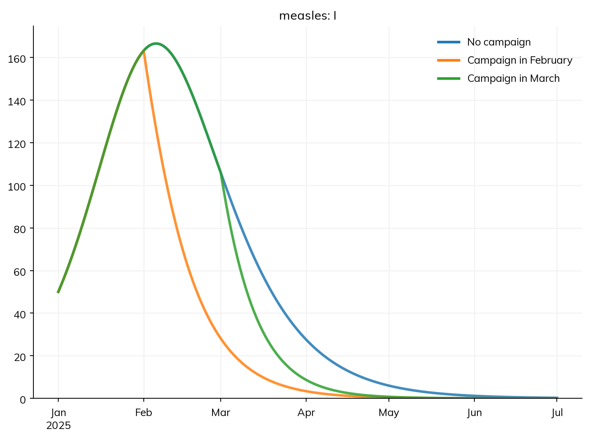
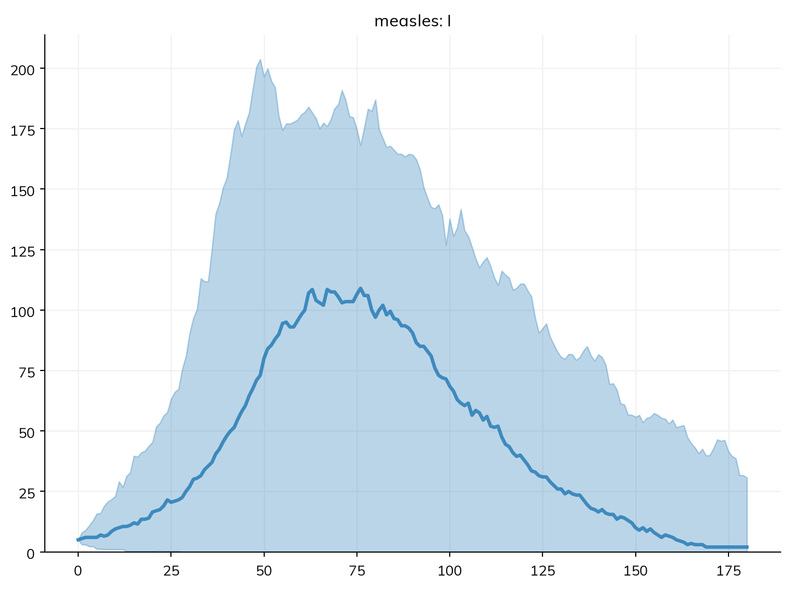
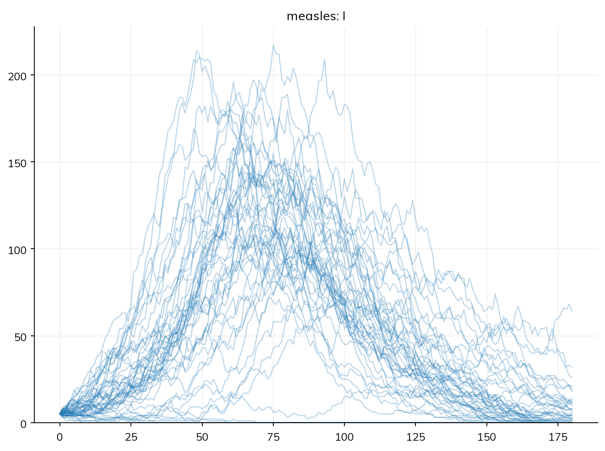
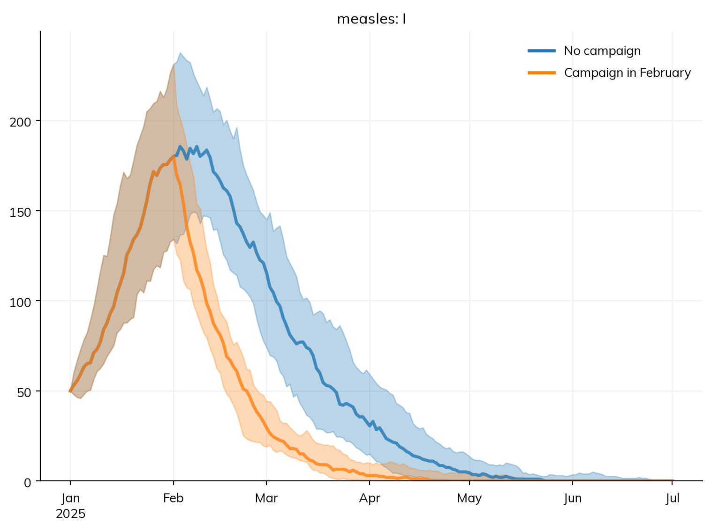
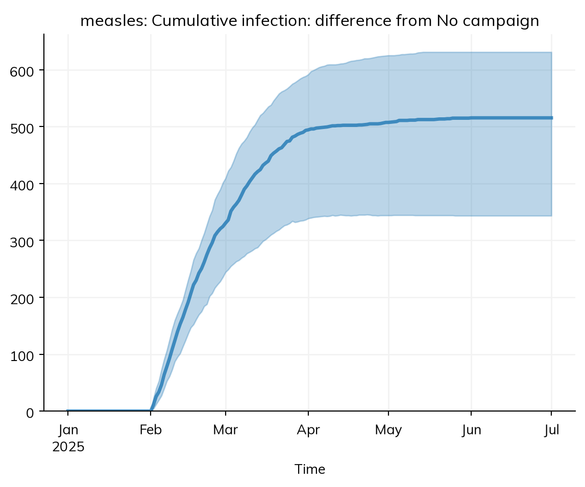
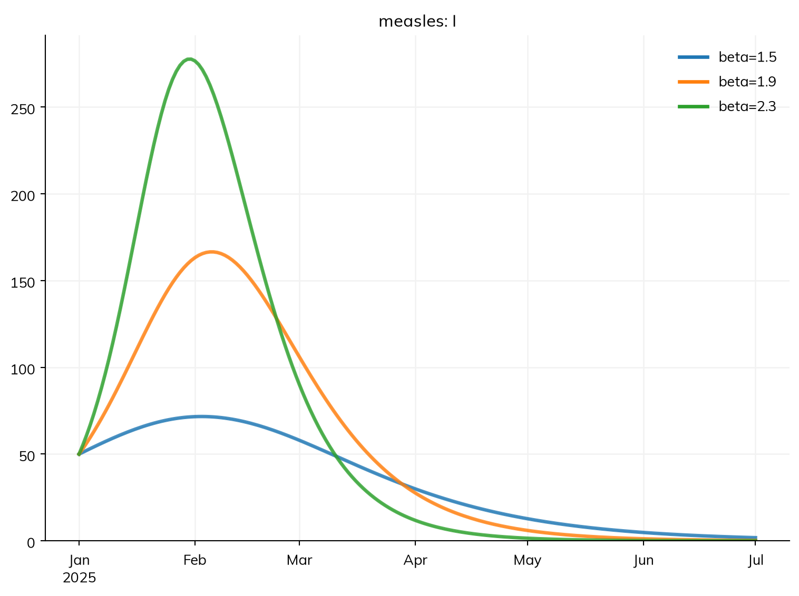
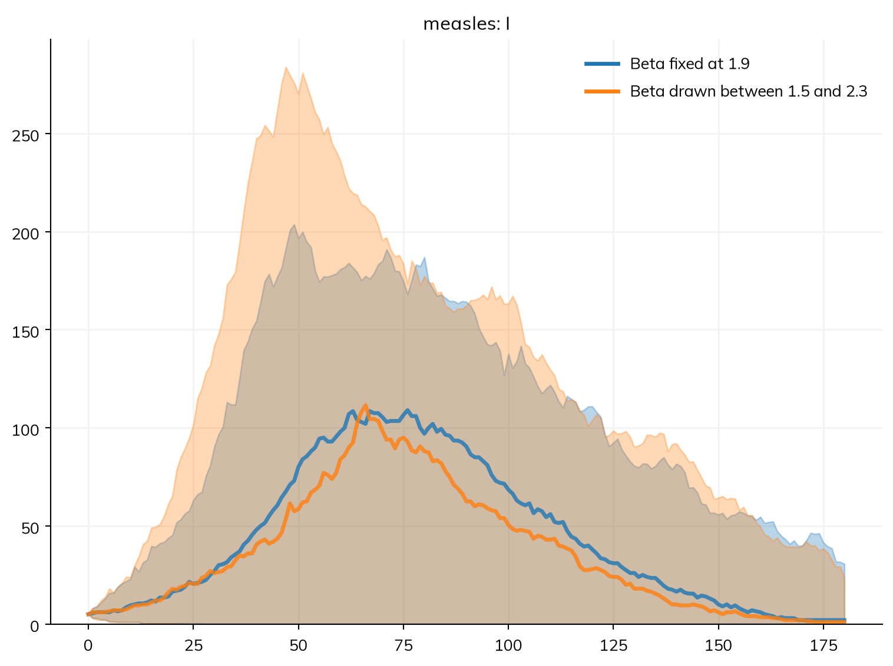

import starsim as ss
S, I, R = ss.states('S I R')
beta = ss.par(1.9) # Transmission rate per day
infection = S >> I @ beta*I
recovery = I >> R @ ss.days(8) # Infectious for 8 days on average
measles = ss.Disease(infection, recovery, init=dict(R=0.9), init_n=dict(I=50)) # 90% immune, 50 infectious
base = ss.Sim(measles, total_pop=20_000, start='2025-01-01', stop='2025-07-01')
february = ss.vaccinate(efficacy=0.95, coverage=0.5, at='2025-02-01')
march = ss.vaccinate(efficacy=0.95, coverage=0.5, at='2025-03-01')Scenarios
A scenario is a sim with something changed: an intervention added, a parameter set to another value, a different population. Comparing scenarios is how most models answer policy questions: how many infections would a campaign avert, and does it matter when it happens? And since a single stochastic run is one draw of what could happen, most comparisons also need many runs of each scenario. This page covers making scenarios and running them together, running a model many times and reading the spread, comparing scenarios fairly, sweeping a parameter, carrying uncertainty in parameter values into the results, and the random seeds that make it all reproducible. T5 – Interventions and scenarios teaches the same through one example; Running sims covers single sims.
Scenarios by label
Here, measles has reached a town of 20,000 people in which 90% are immune, with 50 infectious people on 1 January. The question is what a vaccination campaign that reaches half the town, with a vaccine that protects 95% of those who receive it, would avert, and whether it matters if it happens in February or March:
sim.new() makes a new sim from the same inputs, with whatever is given changed, so each scenario is the base sim with its intervention. ss.parallel() runs a dict of sims by label, at the same time on the computer’s cores:
scenarios = {
'No campaign': base,
'Campaign in February': base.new(interventions=february),
'Campaign in March': base.new(interventions=march),
}
msim = ss.parallel(scenarios)
msim.plot('measles.I')MultiSim: 3 runs of 3 scenarios (No campaign, Campaign in February, Campaign in March)
Done in 0.59 s
The result is an ss.MultiSim: the runs of every scenario, with each result holding a row for each run. msim.summarize() gives each result over the whole run for each scenario: the total of each flow (measles_infection is the number of infections) and the final value of each state:
msim.summarize()| value | ||
|---|---|---|
| result | scenario | |
| measles_S | No campaign | 760.089924 |
| Campaign in February | 1247.680644 | |
| Campaign in March | 896.026833 | |
| measles_I | No campaign | 0.241782 |
| Campaign in February | 0.006078 | |
| Campaign in March | 0.004673 | |
| measles_R | No campaign | 19239.668294 |
| Campaign in February | 18752.313278 | |
| Campaign in March | 19103.968494 | |
| measles_infection | No campaign | 1189.910076 |
| Campaign in February | 702.319356 | |
| Campaign in March | 1053.973167 | |
| measles_recovery | No campaign | 1239.668294 |
| Campaign in February | 752.313278 | |
| Campaign in March | 1103.968494 | |
| alive | No campaign | 20000.000000 |
| Campaign in February | 20000.000000 | |
| Campaign in March | 20000.000000 | |
| new_deaths | No campaign | 0.000000 |
| Campaign in February | 0.000000 | |
| Campaign in March | 0.000000 | |
| new_emigrants | No campaign | 0.000000 |
| Campaign in February | 0.000000 | |
| Campaign in March | 0.000000 | |
| cum_deaths | No campaign | 0.000000 |
| Campaign in February | 0.000000 | |
| Campaign in March | 0.000000 | |
| february_delivered | Campaign in February | 10000.000000 |
| february_eligible | Campaign in February | 20000.000000 |
| february_coverage | Campaign in February | 0.500000 |
| march_delivered | Campaign in March | 10000.000000 |
| march_eligible | Campaign in March | 20000.000000 |
| march_coverage | Campaign in March | 0.500000 |
A campaign in February averts about 490 of the 1,190 infections; by March, most of the outbreak has happened, and it averts about 140. A scenario contains exactly the interventions given to it, so the baseline is a scenario like any other. Where each sim has one disease, a result can also be named without it, as for a single sim: msim.plot('I') and msim.results.I find I in each sim’s disease, even if the diseases are named differently (say, sir in one scenario and seir in another); a sim with several diseases needs the disease named ('measles.I'). The sims themselves are kept in msim.sims, by position (msim.sims[0]), or by label (msim.sims['Campaign in March'], which gives the list of that scenario’s runs).
msim.compare() puts the scenarios side by side as columns, one row per result: by default each result over the whole run, as above, or with t= its value on a date (or at a time index):
msim.compare(t='2025-03-01')Results for t=2025-03-01 for each run:| No campaign | Campaign in February | Campaign in March | |
|---|---|---|---|
| measles_S | 955.366853 | 1270.903289 | 955.366853 |
| measles_I | 105.831507 | 28.036897 | 105.831507 |
| measles_R | 18938.801639 | 18701.059814 | 18938.801639 |
| measles_infection | 9.8202 | 1.675131 | 9.8202 |
| measles_recovery | 13.455939 | 3.625169 | 13.455939 |
| alive | 20000.0 | 20000.0 | 20000.0 |
| new_deaths | 0.0 | 0.0 | 0.0 |
| new_emigrants | 0.0 | 0.0 | 0.0 |
| cum_deaths | 0.0 | 0.0 | 0.0 |
| february_delivered | NaN | 0.0 | NaN |
| february_eligible | NaN | 0.0 | NaN |
| february_coverage | NaN | 0.0 | NaN |
| march_delivered | NaN | NaN | 0.0 |
| march_eligible | NaN | NaN | 0.0 |
| march_coverage | NaN | NaN | 0.0 |
On 1 March, a month after the February campaign, about 28 people are infectious with it and 106 without. output=True returns the table as a dataframe instead of printing it.
ss.parallel() also takes a list of sims (each labeled by its own label), or several sims as arguments. It is a shortcut for ss.MultiSim(sims).run(); options given to it, such as verbose=0, are passed to every run.
Many runs of one model
These runs are ODEs, so each scenario has one answer: what happens on average. To see the outbreaks that could happen, run the model as a stochastic model, in which people move between states at random, and run it many times. Here is measles introduced into the same town by only five infectious people. Each case infects about 1.5 others at the start (R0 of 15 times the 10% who are susceptible). First the ODE, then 50 runs of the same model as an exact stochastic compartmental model (solver='gillespie'; a model that runs as agents is stochastic already; see Solvers and backends for the choices):
measles = ss.Disease(infection, recovery, init=dict(R=0.9), init_n=dict(I=5)) # Now 5 infectious
sim = ss.Sim(measles, total_pop=20_000, stop=ss.days(180))
sim.run();Sim: measles, 20,000 people, as an ODE, days 0 to 180
measles: R0 = 15.2 (R = 1.52 at the start, with 10% susceptible), with 5 infectious at the start
Note: "measles" starts with 5 infected, so whether it takes off is a matter of chance, which solver="ode" does not show; solver="gillespie" with ss.parallel(n_runs=...) does
Done in 0.0059 s; measles: 1,187 infections; at most 137 infectious, on day 74msim = sim.run(solver='gillespie', n_runs=50)
msim.plot('measles.I')MultiSim: 50 runs
Done in 3.4 s
sim.run(n_runs=50) runs it 50 times, each with its own random seed (the same as ss.parallel(sim, n_runs=50)). The ODE gave one outbreak peaking at about 137 infectious on day 74. The plot of the runs shows their median at each time point, and the range that holds 95% of them. lines=True shows each run instead, which shows what the median hides:
msim.plot('measles.I', lines=True)
Some runs die out at once, and the others take off at different times. With five cases at the start and R = 1.5, branching-process theory gives a chance of (1/1.5)⁵ ≈ 13% that all five chains of transmission end by chance, something the ODE cannot show (the first line the ODE run printed says so). For more on the chance that an introduction takes off, see Branching and rescaling.
Reading many runs
msim.summarize() gives each result over the whole of each run (the total of a flow, such as infections; the final value of a state), and then the median, a 95% interval (low to high), the mean, and the standard deviation over the runs:
msim.summarize()| median | low | high | mean | std | |
|---|---|---|---|---|---|
| result | |||||
| measles_S | 847.0 | 664.025 | 1988.300 | 954.16 | 365.283909 |
| measles_I | 2.0 | 0.000 | 30.650 | 6.36 | 11.057595 |
| measles_R | 19152.0 | 18011.700 | 19331.325 | 19039.48 | 366.226118 |
| measles_infection | 1148.0 | 6.700 | 1330.975 | 1040.84 | 365.283909 |
| measles_recovery | 1152.0 | 11.700 | 1331.325 | 1039.48 | 366.226118 |
| alive | 20000.0 | 20000.000 | 20000.000 | 20000.00 | 0.000000 |
| new_deaths | 0.0 | 0.000 | 0.000 | 0.00 | 0.000000 |
| new_emigrants | 0.0 | 0.000 | 0.000 | 0.00 | 0.000000 |
| cum_deaths | 0.0 | 0.000 | 0.000 | 0.00 | 0.000000 |
The median outbreak has about 1,150 infections, while the interval runs from almost none (the runs that died out) to about 1,330. A summary of a total is a summary over whole epidemics: each run gives one number. interval=0.5 gives the interquartile range instead.
The band in the plot is different: it is the spread of the runs at each time point, taken separately. The median curve is not a typical epidemic, since the runs peak at different times, and at each time point the median mixes runs that are rising, peaking, and over. Its peak is lower than the peak of most runs:
peaks = msim.summarize(how={'measles_I': 'max'}).loc['measles_I'] # The peak of each run, summarized
print('Median of the peaks:', peaks['median'])
print('Peak of the median curve:', msim.results.measles.I.median().max())Median of the peaks: 137.5
Peak of the median curve: 109.0So for a question about the size or timing of the peak, summarize the peak of each run (as above), not the median curve; for a question about how many people are infected on a given date, the band at each time point is the answer. The usual summaries of a result over the runs are built in:
res = msim.results.measles.I
res.values # Every run: one row per run, one column per time point
res.median() # The median at each time point
low, mid, high = res.quantiles() # The 2.5%, 50%, and 97.5% quantiles at each time point
res.quantiles([0.25, 0.5, 0.75]) # Other quantiles
res.mean() # The mean at each time point
res.take(3) # One run, as the result of a single simEach summary is over the runs of each scenario separately. With several scenarios, low, mid, high = res.quantiles() still works: each is a result with a row per scenario, and select(scenario='Campaign in February') picks one. msim.to_df() gives every result as quantiles over the runs at each time, as one long table, for saving or plotting elsewhere.
How many runs
The interval is estimated from the runs, so with few runs its ends are uncertain themselves. The ends of a 95% interval rest on the most extreme 2.5% of runs at each end: one run in 40. With 500 runs:
many = sim.run(solver='gillespie', n_runs=500)
many.summarize().loc['measles_infection']MultiSim: 500 runs
Done in 17.9 smedian 1159.000000
low 1.000000
high 1318.150000
mean 1001.738000
std 414.325352
Name: measles_infection, dtype: float64Here the summary of 50 runs was already close to this. In general, the median settles with a few tens of runs, while the ends of the interval rest on few runs each, and move most from one set of runs to the next. As a rough guide, 20 to 50 runs are enough for a median and the shape of the spread, and a few hundred for the ends of a 95% interval. Stochastic compartmental runs are fast, so many runs are cheap; for agents, it may be worth starting with fewer.
Comparing scenarios with many runs
Comparing two scenarios run many times, the question is whether the difference between them is larger than the difference chance alone would make. Starsim helps in two ways.
First, the runs of each scenario use the same seeds in the same order (the first run of each with seed 1, the second with seed 2, and so on), so the first run of the baseline and the first run of the campaign share their random numbers: the same people are infected by the same chains of transmission, until the campaign changes them. Starsim makes sure that a random number goes to the same use in both runs, even when the intervention changes how many draws are made (common random numbers; see Random numbers). The difference between paired runs is then mostly the effect of the intervention, not noise.
Second, msim.diff() gives the difference of each scenario from a baseline, run by run, and msim.summarize(baseline=...) summarizes those differences. Here are the February campaign and the baseline from above, each run 20 times with the chain binomial (solver='binomial'):
scenarios = {
'No campaign': base.new(solver='binomial', verbose=0),
'Campaign in February': base.new(solver='binomial', interventions=february, verbose=0),
}
msim = ss.parallel(scenarios, n_runs=20)
msim.plot('measles.I')
msim.summarize(baseline='No campaign').loc['measles_infection']| median | low | high | mean | std | |
|---|---|---|---|---|---|
| scenario | |||||
| Campaign in February | -515.5 | -631.2 | -343.475 | -509.5 | 85.166601 |
The difference in infections is negative, about −520: the campaign averts about 520 infections, with 95% of runs between about 340 and 630. msim.diff() gives the differences themselves, run by run, as results; here, the infections averted so far at each point in time:
averted = -msim.diff('No campaign')['Campaign in February'].measles.infection.cum # Infections averted so far, in each pair of runs
averted.plot()
To see what pairing buys, compare the paired runs with the same scenarios given different seeds (rand_seed=1000 for the campaign), so that the runs are not paired:
def averted_by(msim):
""" Infections averted by the campaign by the end, with the 95% interval over the runs """
averted = -msim.diff('No campaign')['Campaign in February'].measles.infection.cum
low, mid, high = averted.quantiles()
print('Infections averted:', round(mid[-1]), 'with 95% of runs between', round(low[-1]), 'and', round(high[-1]))
unpaired = ss.parallel({
'No campaign': scenarios['No campaign'],
'Campaign in February': scenarios['Campaign in February'].new(rand_seed=1000),
}, n_runs=20)
print('Paired: ', end=' '); averted_by(msim)
print('Unpaired:', end=' '); averted_by(unpaired)Paired: Infections averted: 516 with 95% of runs between 343 and 631
Unpaired: Infections averted: 514 with 95% of runs between 245 and 603The estimate of the effect is about the same, but its interval is wider when the runs are not paired, since the difference then includes the chance differences between two unrelated outbreaks. Pairing is what makes a small effect visible in few runs. Paired runs need the same model apart from the intervention: a change to anything else (the population size, the time step) breaks the pairing.
Parameter sweeps
To see how a result depends on a parameter, run the sim with each of a set of values. pars= takes a list of values for each parameter, and each value is a scenario of its own, labeled with it. Here the outbreak with β from 1.5 to 2.3 per day (R0 from 12 to 18):
sim = base.new(label='', verbose=0) # Back to 50 infectious at the start; base took the label 'No campaign' from ss.parallel() above
msim = ss.parallel(sim, pars=dict(beta=[1.5, 1.9, 2.3]))
msim.plot('measles.I')
msim.summarize().loc['measles_infection']| value | |
|---|---|
| scenario | |
| beta=1.5 | 720.454008 |
| beta=1.9 | 1189.910076 |
| beta=2.3 | 1467.045386 |
The parameter is named as it is in the model: here beta, the name of the ss.par() it was given (describe() lists the names). When there is more than one disease, give the disease too, e.g. pars={'measles.beta': [1.5, 2.3]}. The values become columns of msim.runs, the table of runs, and a result can be picked by value: msim.results.measles.I.select(beta=2.3).
Several parameters given together are taken value by value (the first value of each together, then the second, and so on), so each needs the same number of values; for other sets, give a list of dicts, one per set (pars=[dict(beta=1.5, dur=ss.days(6)), dict(beta=2.3, dur=ss.days(8))], where dur is the infectious period). For a full grid of two parameters, build the list of dicts with a loop. n_runs= runs each set that many times, with the same seeds for each set, so the sets are compared with the same chance events. A seed given in pars= (rand_seed=[1, 2, 1, 2] next to beta=[1.5, 1.5, 2.3, 2.3]) is a run of its scenario, not a scenario of its own.
A sweep gives each value equal space, but that does not say they are equally likely. To carry the uncertainty in a parameter into the results instead, draw its value afresh for each run (next).
Uncertainty in parameter values
Chance is one source of uncertainty; not knowing the parameters is another. A parameter declared with ss.par() and bounds (or a prior) can be drawn afresh for each run with priors=True: each run takes a value drawn uniformly between the bounds (or from the prior), and a seed of its own, so the spread of the runs includes both. Here β is between 1.5 and 2.3 per day (R0 between 12 and 18), with the five initial cases from before, compared with the same runs with β fixed:
beta = ss.par(1.9, bounds=[1.5, 2.3]) # β, known to lie between these values
infection = S >> I @ beta*I
recovery = I >> R @ ss.days(8)
measles = ss.Disease(infection, recovery, init=dict(R=0.9), init_n=dict(I=5))
sim = ss.Sim(measles, total_pop=20_000, stop=ss.days(180), solver='gillespie', verbose=0)
fixed = ss.parallel(sim.new(label='Beta fixed at 1.9'), n_runs=50)
drawn = ss.parallel(sim.new(label='Beta drawn between 1.5 and 2.3'), priors=True, n_runs=50)
drawn.runs.head() # The value of beta in each run| scenario | beta | rand_seed | |
|---|---|---|---|
| 0 | Beta drawn between 1.5 and 2.3 | 1.909457 | 1 |
| 1 | Beta drawn between 1.5 and 2.3 | 2.260371 | 2 |
| 2 | Beta drawn between 1.5 and 2.3 | 1.615328 | 3 |
| 3 | Beta drawn between 1.5 and 2.3 | 2.258920 | 4 |
| 4 | Beta drawn between 1.5 and 2.3 | 1.749465 | 5 |
ss.MultiSim.merge() puts the two sets of runs together, so they can be plotted and summarized side by side:
both = ss.MultiSim.merge(fixed, drawn)
both.plot('measles.I')
both.summarize().loc['measles_infection']| median | low | high | mean | std | |
|---|---|---|---|---|---|
| scenario | |||||
| Beta fixed at 1.9 | 1148.0 | 6.700 | 1330.975 | 1040.84 | 365.283909 |
| Beta drawn between 1.5 and 2.3 | 1124.0 | 4.675 | 1505.200 | 1021.58 | 448.412359 |
The medians are much the same, but with β uncertain the upper end of the interval rises from about 1,330 infections to about 1,500: outbreaks with a higher β are larger. The band now holds both the chance in each run and the uncertainty in β.
After a model is fitted to data, the values found by the fit can be carried into a projection the same way (fit.project(); see Fitting a model). To see how the results depend on each value in turn, rather than all at once, sweep the parameter instead (above).
Seeds
Every stochastic run starts from a random seed (rand_seed, 1 by default), and the same seed gives the same run, on any computer:
binomial = base.new(solver='binomial', verbose=0)
a = binomial.new(rand_seed=1).run()
b = binomial.new(rand_seed=1).run()
c = binomial.new(rand_seed=2).run()
print('Infections with seeds 1, 1, and 2:', a.results.measles.infection.sum(), b.results.measles.infection.sum(), c.results.measles.infection.sum())Infections with seeds 1, 1, and 2: 1264.0 1264.0 1269.0n_runs=k uses the seeds rand_seed, rand_seed + 1, …, rand_seed + k − 1, so the first of many runs is the same as a single run, and any run can be made again on its own: run i (counting from 0) of a sim with seed 1 is the sim with rand_seed=1 + i. To run particular seeds, give them as a sweep: ss.parallel(sim, pars=dict(rand_seed=[1, 5, 9])), which gives three runs of the sim’s scenario (not three scenarios). msim.runs, the table of runs, gives the seed of each run (rand_seed), so a run that stands out can be made again on its own. An ODE has no random numbers, so its seed changes nothing.
Combining runs, copies, and memory
msim.combine() adds the runs together into one sim, as if they were one population: counts are summed, and other results (such as prevalence) are averaged, weighted by each sim’s population. It is a way to treat several smaller runs of agents as one larger population, with no uncertainty bounds since the result is a single sim; the people are not joined, so the combined sim cannot be run on. ss.MultiSim.merge(m1, m2) puts the runs of several MultiSims together into one, one after the other, and msim.split() splits them again (or, for a MultiSim that was not merged, into the runs given by inds= or chunks=).
A sim copies the modules it is given, so the same disease or intervention can be given to several sims, as above. ss.parallel(), on the other hand, runs the sims it is given as they are, so after ss.parallel(scenarios), each sim in scenarios has its results (with n_runs=, the runs are new sims, and the sims given are not run). inplace=False runs copies instead. A sim given in a dict takes the label it is given there.
By default, ss.parallel() keeps the results of each run but not the people in it, which keeps memory use down when there are many runs. For many thousands of runs, keep only what you need from each: msim.summarize(), msim.to_df(), or a function of each sim, saved as a table, rather than the MultiSim itself. ss.converters.to_hub() writes runs as the quantile tables that forecasting hubs take.
ss.parallel() runs the sims in separate processes. In a script (rather than a notebook), on Windows and macOS, put the code that runs them under if __name__ == '__main__':, as Python’s multiprocessing requires; and on a system that cannot start processes, ss.parallel(..., parallel=False) runs the same sims one after the other. For larger studies, build the sims with a make_sim() function (see Running sims), and for running them on a cluster, see Deployment.
Pitfalls
- Scenarios that differ in more than the intervention. Make each scenario from the same base with
sim.new(), so that everything else, including the seed, is the same. - Comparing medians instead of differences. The difference between the medians of two scenarios is not the median difference; use
msim.diff()for the effect of an intervention, run by run. - The median curve is not a typical epidemic. For the size or timing of the peak, summarize each run’s peak.
- Runs that die out pull the summary down. If the question is about outbreaks that take off, look at those runs (e.g.
lines=True), and report the chance of dying out separately. - Too few runs for the ends of an interval. Use a few hundred for a 95% interval that you will report.
- Reading a band as a confidence interval for a parameter. The band over runs with fixed values is the spread due to chance alone; it says nothing about how well β is known unless the runs drew β too (
priors=True).
Further reading
- Covasim: Running scenarios: multisims, scenarios, and uncertainty in Starsim’s predecessor
- EpiModel: Training materials: stochastic network models and their simulation-based uncertainty in R
- Epiverse epidemics: Modelling scenarios: comparing intervention scenarios, with parameter uncertainty, in an R package
- Epiverse epidemics: Parameter uncertainty: drawing parameter values for each run, as
priors=Truedoes here